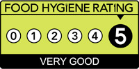

Turturici ~ Awards and Recommendations
Pizzeria ~ Ristorante ~ turturici
Awards and Recommendations:
In addition to prestigious 'Restaurant of the Year' awards and accolades over the years, we are particularly proud to boast the coveted '5 stars' for kitchen hygiene, and 'platinum' awards for food safety.
Turturici has consistently achieved a '5 star' rating and 'platinum' award.
Food hygiene rating scheme: The scheme is a Food Standards Agency and local authority initiative, which provides diners with information about the hygiene standards in food outlets.

British Food Standards